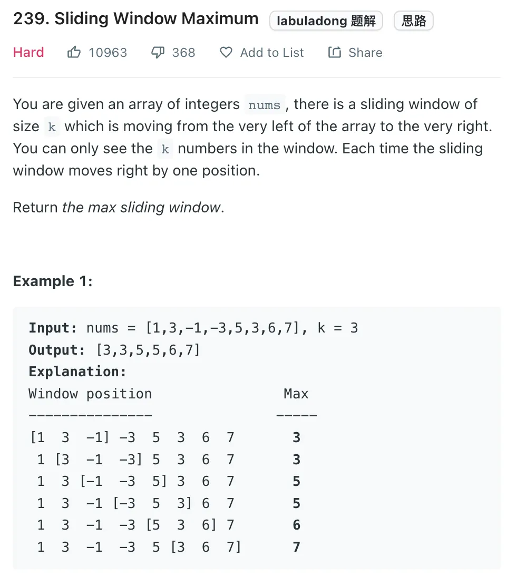
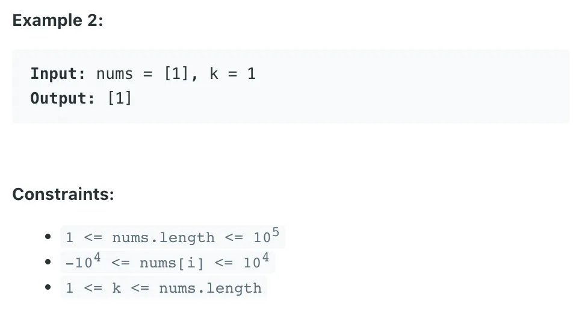

239. Sliding Window Maximum
考過的公司：Asked by: Amazon, Bytedance, Google, tiktok
Question


✍🏽 My Solution - 暴力
Time Limit Exceeded
class Solution {
public int[] maxSlidingWindow(int[] nums, int k) {
int n = nums.length;
int[] res = new int[n-k+1];
int left = 0, right = left + k - 1;
while (left <= n - k) {
int max = Integer.MIN_VALUE;
for (int i = left; i <= right; j++) {
max = Math.max(max, nums[i]);
}
res[left] = max;
left++;
right++;
}
return res;
}
}
🧠 Thought Process
- Why did I choose this particular implementation?
- 自己想的yayaya
- 两层
for循环，每次都从窗口中找最大值即可。
- What is the time/space complexity of my solution? How do I know?
- time: O(n^2)
Solution #1 [雙向隊列]
Runtime: 35 ms, faster than 87.58% of Java online submissions for Sliding Window Maximum. Memory Usage: 61.3 MB, less than 87.65% of Java online submissions for Sliding Window Maximum.
class Solution {
public int[] maxSlidingWindow(int[] nums, int k) {
if (nums == null || k <= 0) {
return new int[0];
}
int n = nums.length;
// 结果数组（窗口个数 len - k + 1)
int[] r = new int[n-k+1];
int ri = 0;
// store index
Deque<Integer> q = new ArrayDeque<>();
// 遍历数组中元素，right表示滑动窗口右边界
for (int right = 0; right < nums.length; right++) {
// remove smaller numbers in k range as they are useless
// 如果队列不为空且当前考察元素大于等于队尾元素，则将队尾元素移除。
// 直到，队列为空或当前考察元素小于新的队尾元素
while (!q.isEmpty() && nums[q.peekLast()] < nums[right]) {
q.pollLast();
}
// q contains index... r contains content
q.offer(right);
// remove numbers out of range k
// 当队首元素的下标小于滑动窗口左侧边界left时
// 表示队首元素已经不再滑动窗口内，因此将其从队首移除
int left = right - k + 1; // 计算窗口左侧边界
while (!q.isEmpty() && q.peek() < left) {
q.poll();
}
// 由于数组下标从0开始，因此当窗口右边界right+1大于等于窗口大小k时
// 意味着窗口形成。此时，队首元素就是该窗口内的最大值
if (right + 1 >= k) {
r[ri++] = nums[q.peek()];
}
}
return r;
}
}
Explanation (in my words)
- How does their solution work?
- 动画演示 单调队列 239.滑动窗口最大值
- 遍历给定数组中的元素，如果队列不为空且当前考察元素大于等于队尾元素，则将队尾元素移除。直到，队列为空或当前考察元素小于新的队尾元素；
- 当队首元素的下标小于滑动窗口左侧边界left时，表示队首元素已经不再滑动窗口内，因此将其从队首移除。
- 由于数组下标从0开始，因此当窗口右边界right+1大于等于窗口大小k时，意味着窗口形成。此时，队首元素就是该窗口内的最大值。